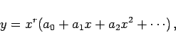

Inhalt Index DeskTop Bronstein

 Differentialgleichungen Gewöhnliche Differentialgleichungen Differentialgleichungen höherer Ordnung und Systeme von Differentialgleichungen Lineare Differentialgleichungen 2. Ordnung
Differentialgleichungen Gewöhnliche Differentialgleichungen Differentialgleichungen höherer Ordnung und Systeme von Differentialgleichungen Lineare Differentialgleichungen 2. Ordnung


| y''+ p(x)y'+q(x)y = F(x) | (9.49a) |
Dabei sind y1 und y2 zwei linear unabhängige partikuläre Lösungen dieser Gleichung. Wenn eine partikuläre Lösung y1 bekannt ist, dann kann die zweite y2 mit der aus der Formel (9.35) von LIOUVILLE folgenden Gleichung
bestimmt werden, wobei A beliebig wählbar ist.
| (9.49d) |
gewonnen werden, wobei y1 und y2 zwei partikuläre Lösungen der zugehörigen homogenen Differentialgleichung sind.
| (9.50b) |
angesetzt und in die Differentialgleichung (9.50a) eingesetzt. Gleichsetzen der Koeffizienten gleicher Potenzen von (x - x0) liefert Gleichungen zur Bestimmung der Koeffizienten .
| Beispiel |
|
Zur Lösung der Differentialgleichung y''+xy=0 wird |
|  | (9.51b) |
deren Exponenten r aus der definierenden Gleichung
| Beispiel |
|
Für die BESSELsche Differentialgleichung (9.52a) erhält man mit der Methode der unbestimmten Koeffizienten nur eine Lösung der Form , die bis auf einen konstanten Faktor mit Jn(x) übereinstimmt. Als zweite Lösung findet man wegen  |